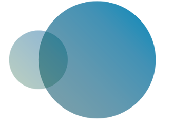
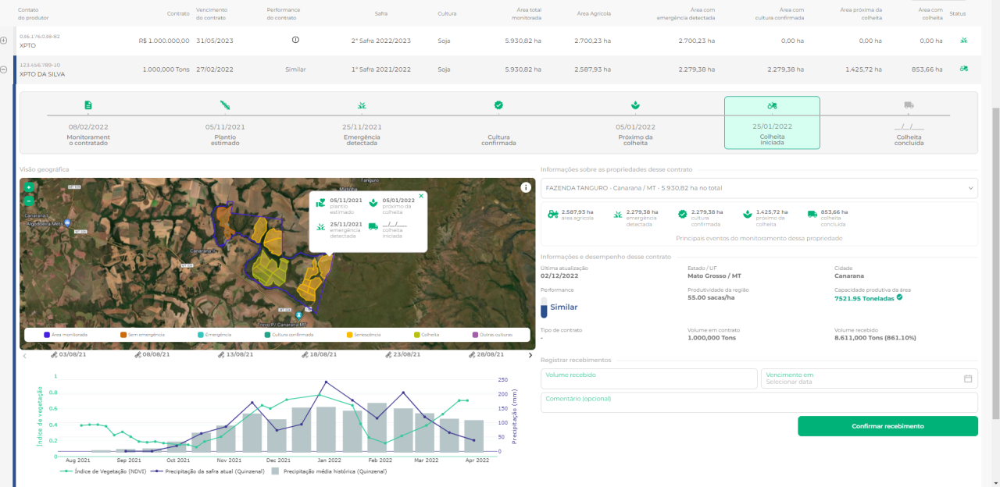
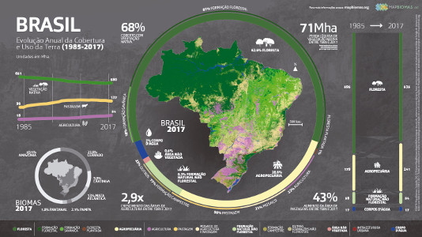
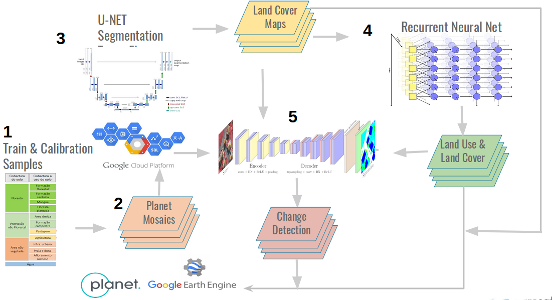
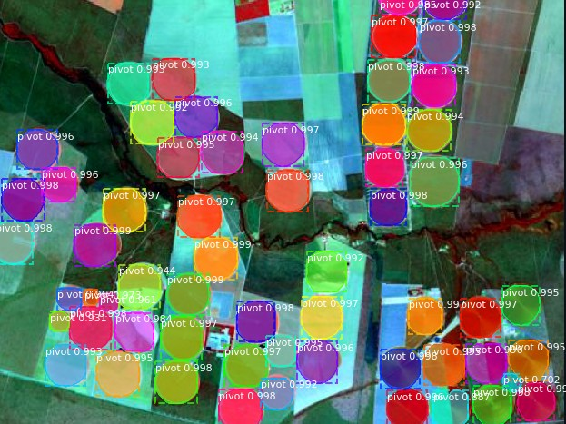
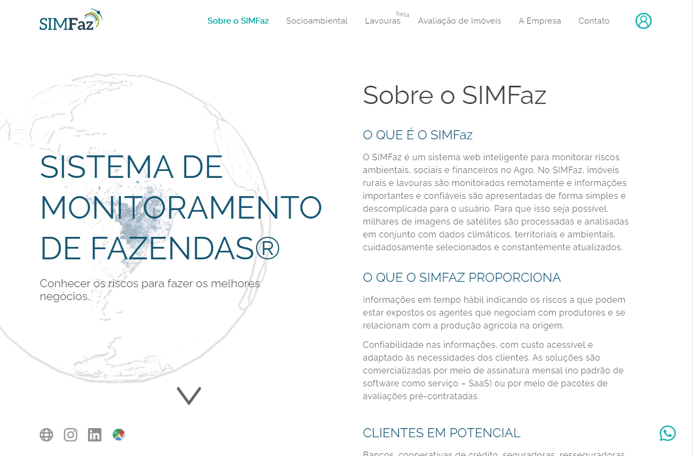
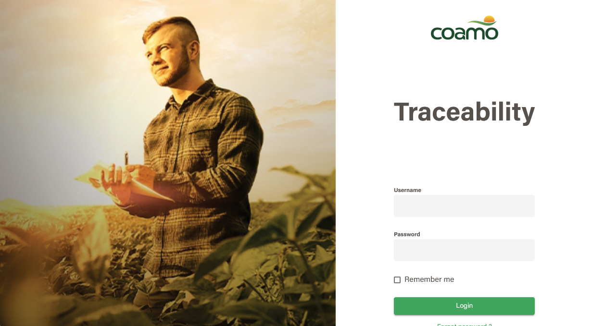
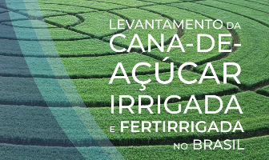
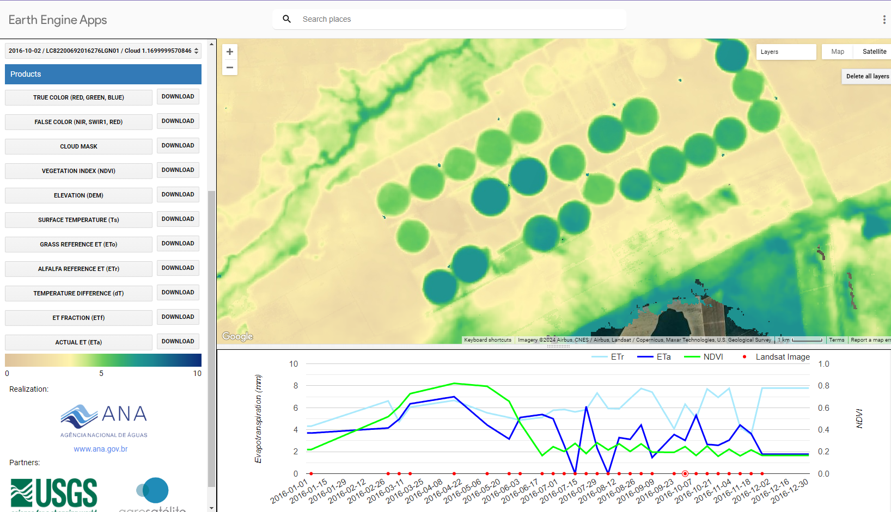
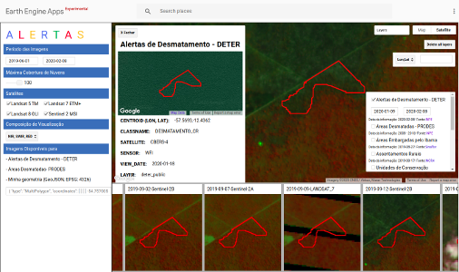

Product, data, and decisions in agribusiness
I turn satellite imagery into decisions for agriculture, ESG, and rural credit.
I am Marciano Saraiva, founder and technical director of i2Geo. I build i2Crop and i2Check — geographic information systems banks, insurers, and agribusiness companies use to read the crop season and land-use compliance from satellite imagery.
About
As founder and technical director of i2Geo, I build i2Crop and i2Check. i2Crop reads the crop season from Sentinel-2 and Landsat time series. i2Check reads land use and environmental compliance from satellite imagery and public territorial layers. Banks, insurers, and agribusiness companies use them for credit, insurance claims, and ESG.
The market often reads me through the technical stack. The track record rests on products in production, teams led, credit and compliance decisions, and national-scale impact — from Crop Monitor at Serasa Experian to MapBiomas land-use mapping.
Three problems I know how to solve:
- Agricultural credit and insurance portfolios with no visibility into the crop season: I led Crop Monitor — from concept to Serasa Experian's commercial product — so banks, cooperatives, and insurers can follow planting, crop development, and harvest, cutting field visits, fraud, and surprise crop losses.
- A product stuck between the business and engineering: I worked as PM, PO, and technical lead at the same time. I led one team of 14 (software development and geoprocessing), formed at Brain and continued at Serasa Experian after the acquisition — Brain → Serasa — and delivered Crop Monitor, the Deforestation Report, Property Valuation, the Loss Assessment Report, and Historical Analysis of Rural Properties.
- Environmental risk and compliance at country scale: I contributed to MapBiomas, Brazil's Fourth National Communication to the UNFCCC, and irrigation maps used in public policy. Models with accuracy above 90% across the national territory, turned into day-to-day operations. First author: center pivots (Remote Sensing, 2020) — the paper I published. Coauthor in the network: MapBiomas, about 1,800 citations (Souza Jr. et al., Remote Sensing, 2020) — adoption of the shared infrastructure, not a personal h-index.
Impact
Credit and insurance
Portfolio decisions backed by crop evidence
Agro-environmental products used to monitor rural operations, anticipate crop failure, reduce field visits, and support credit approval and insurance claims.
Leadership
Team, product, and delivery under the same mandate
I translated client and executive demand into roadmap, architecture, and operations, while keeping data quality.
ESG and territory
Compliance and traceability at scale
Soy traceability at COAMO, deforestation, rural property valuation, and national mapping of land use and irrigation.
Applied science
Research that became infrastructure
The center-pivot paper, where I am first author (99% precision), became a MapBiomas method. The land-use paper is a network article (Souza Jr. et al.): its citations measure adoption of that infrastructure.
Professional Experience
I build i2Crop and i2Check at i2Geo: geographic information systems that read the crop season and territorial compliance from satellite imagery, for banks, insurers, and agribusiness companies. The method is satellite time series and computer vision.
- What i2Geo builds: i2Crop follows the crop season — vegetation index, phenological curves, and weather anomalies from Sentinel-2 and Landsat. i2Check reads land use and environmental compliance against public territorial layers. These are systems I build and operate.
- For whom, and by what method: banks, insurers, and agribusiness companies. The method is satellite time series and computer vision, including the center-pivot model I published as first author (Remote Sensing, 2020, 99% precision) and land-use models with accuracy above 90% at national scale.
- What the operation delivers: evidence of planting, crop development, harvest, and land-use exposure for credit, insurance claims, property valuation, and ESG, without a field visit on every file.
Serasa Experian (acquired Brain Agriculture in March 2025)
After the acquisition of Brain Agriculture, I continued to lead the agro-environmental solutions at Serasa Experian, aligning product, team, and operations with the company's rural-credit portfolio.
- Product P&L continuity: I kept Crop Monitor, the Deforestation Report, Property Valuation, the Loss Assessment Report, and Historical Analysis of Rural Properties as a commercial offering for banks, cooperatives, and insurers.
- The same team through the integration: the one team of 14 I had built at Brain (4 developers and 10 geoprocessing analysts) moved with the acquisition, Brain → Serasa. I kept that team delivering with data quality.
- Credit and risk decisions: Crop Monitor follows the production cycle with satellite and weather data to reduce field visits, anticipate crop failure, and mitigate fraud in rural operations.
I built Brain's agro-environmental product line, from the hypothesis to the product running in production at Serasa Experian. I grew from technical leadership into a PM/PO role with a mandate over the team and delivery.
- Crop Monitor: I led the creation and rollout of the crop-monitoring product using satellite imagery, weather, and AI, now a Serasa Experian offering for rural-credit portfolios.
- Decision portfolio: I led the Deforestation Report, Property Valuation, the Loss Assessment Report, and Historical Analysis of Rural Properties — problems of risk, ESG, and pricing, delivered as software.
- One team, later Serasa: I built and led a single multidisciplinary team of 14 (4 developers and 10 geoprocessing analysts) and defined an architecture that can ingest imagery at volume, classify it with AI, and return results at the client's pace. That same team continued at Serasa Experian after the acquisition.

Agrosatélite Geotecnologia Aplicada Ltda.
I took part in projects of national and international scope (MapBiomas, UNFCCC, NexGenMap) that left the paper and became data used by government, banks, and agribusiness companies.
- SIMFaz 2.0: technical leadership of the farm-monitoring platform for environmental, social, and financial risk — used by banks, insurers, and agribusiness in land appraisal and credit.
- Soy traceability (COAMO): I designed and delivered the portal end to end, from the origin of the soy to market sustainability and compliance criteria.
- Territorial infrastructure: deep-learning models with 99% precision for center pivots (the basis of MapBiomas irrigation mapping) and land-use series for 1985–2018 with accuracy above 91%.
Results and deliverables

A Serasa Experian product for banks, cooperatives, and insurers to follow the crop cycle and the risk in a rural portfolio.
I led Crop Monitor from the hypothesis to the commercial product. The system combines satellite imagery, weather, and AI to flag emergence, crop type, harvest proximity, and harvest start — reducing field visits, anticipating crop failure, and mitigating fraud. I worked as technical lead, PM, and PO, managing the team and data quality at scale.

Brazil's annual land-use series, now data infrastructure for policy, credit, and research.
From 2017 to 2021, I mapped agriculture and planted forests across Brazil with Landsat imagery from 1984 onward. I am a coauthor, not the first author, of the MapBiomas network paper in Remote Sensing (2020, Souza Jr. et al.). Its roughly 1,800 citations measure adoption of that infrastructure, not a personal citation count. The data left the lab and now guides environmental monitoring, rural credit, and territorial management.

Brazil's official greenhouse-gas inventory for the land-use sector, submitted to the UN Climate Convention.

A partnership of Planet, MapBiomas, Google, and the Moore Foundation for the next generation of tropical-forest monitoring.

A national irrigation-mapping method, with 99% precision, adopted as a reference by MapBiomas.
I published, as first author, the method for automatic detection of center-pivot irrigation systems (Remote Sensing, 2020): 99% precision, 88% recall, and more than 42,000 PlanetScope images. The work is cited as the basis for MapBiomas irrigation mapping and for water-demand studies, from Brazilian public policy to the Zambezi River Basin.

Geographic intelligence for credit, insurance, and appraisal of rural properties.
As technical lead, I delivered SIMFaz 2.0: three modules — Environmental and Social, Land Appraisal, and Agricultural Monitoring — so banks, insurers, and agribusiness companies can decide risk, value, and compliance of rural properties with satellite and weather data, on the timeline of the operation.

Traced soy origin for sustainability and market compliance.


An estimate of flooded area and agricultural losses for decisions in an emergency.

A National Water and Sanitation Agency (ANA) tool for estimating actual evapotranspiration in Brazil.

An operational view of INPE deforestation alerts for enforcement and conservation.
How I work
Product
PM and PO for agro-environmental solutions
I frame the business problem, prioritize what changes the client's decision, and carry the roadmap through to the product in production.
People
Leadership of multidisciplinary teams
One team, Brain → Serasa: 14 people in development and geoprocessing, continuous delivery, and data quality.
Decision
Credit, risk, ESG, and territory
I turn satellite data into evidence for credit approval, insurance claims, property valuation, traceability, and compliance.
Scale
National-scale data architecture
Imagery pipelines, AI, and a digital product able to operate across all of Brazil with accuracy above 90%.
Tools I use to deliver
These tools keep the operation running. The positioning is the decision they support.
Python · Django · Google Earth Engine · TensorFlow · GDAL · PostgreSQL · Angular · Docker
Education
Education supports how I reason about the systems I build.
- PUC Minas (Pontifical Catholic University of Minas Gerais), 2020–2021 — Postgraduate specialization in Artificial Intelligence and Machine Learning. Capstone: intra-annual land-use mapping.
- PUC Minas (Pontifical Catholic University of Minas Gerais), 2019–2020 — Postgraduate specialization in Data Science and Big Data. Capstone: air-temperature forecasting in Brazil.
- Federal University of Ceará, 2013–2016 — Bachelor of Information Systems.
Research that became operations
Two different contributions. First author: center pivots (Remote Sensing, 2020) — the paper I published. Coauthor in the network: the MapBiomas land-use paper (Souza Jr. et al.) has about 1,800 citations — adoption of the shared infrastructure, not a personal h-index.
Automatic Mapping of Center Pivot Irrigation Systems from Satellite Images Using Deep Learning
First author · Remote Sensing, 2020 · 99% precision
This is my paper as first author, separate from the MapBiomas network article. A method for automatic mapping of center pivots using more than 42,000 PlanetScope images. 99% precision, 88% recall. It became the reference for MapBiomas irrigation mapping and for water-demand studies in Brazil and in the Zambezi River Basin.
DOI: 10.3390/rs12030558
Coauthor in the network · Souza Jr. et al. · Remote Sensing, 2020 · ~1,800 citations
Annual land-use and land-cover series for Brazil (1985–2017), produced by the MapBiomas network. I am one coauthor on a long author list. The roughly 1,800 citations measure adoption of that infrastructure, not a personal citation count. The data left the paper and became infrastructure for environmental monitoring, rural credit, and territorial management.
DOI: 10.3390/rs12172735
Elsevier, 2025 · international application of the center-pivot method
The center-pivot mapping I published in 2020 was used to estimate irrigation water demand and to separate surface water from groundwater in the Zambezi River Basin — the Brazilian method operating outside Brazil.
Construction of Normalized Temporal Mosaics from Planet Imagery
NexGenMap · SBSR, 2019
Preprocessing and temporal mosaics of Planet imagery for land-use mapping and detection of landscape disturbance — the data layer that preceded high-frequency monitoring in Brazil.
DOI: 10.29327/xix-sbsr.a1
Contact
Conversations with partners and operators about the geospatial work I do for credit, risk, and ESG.